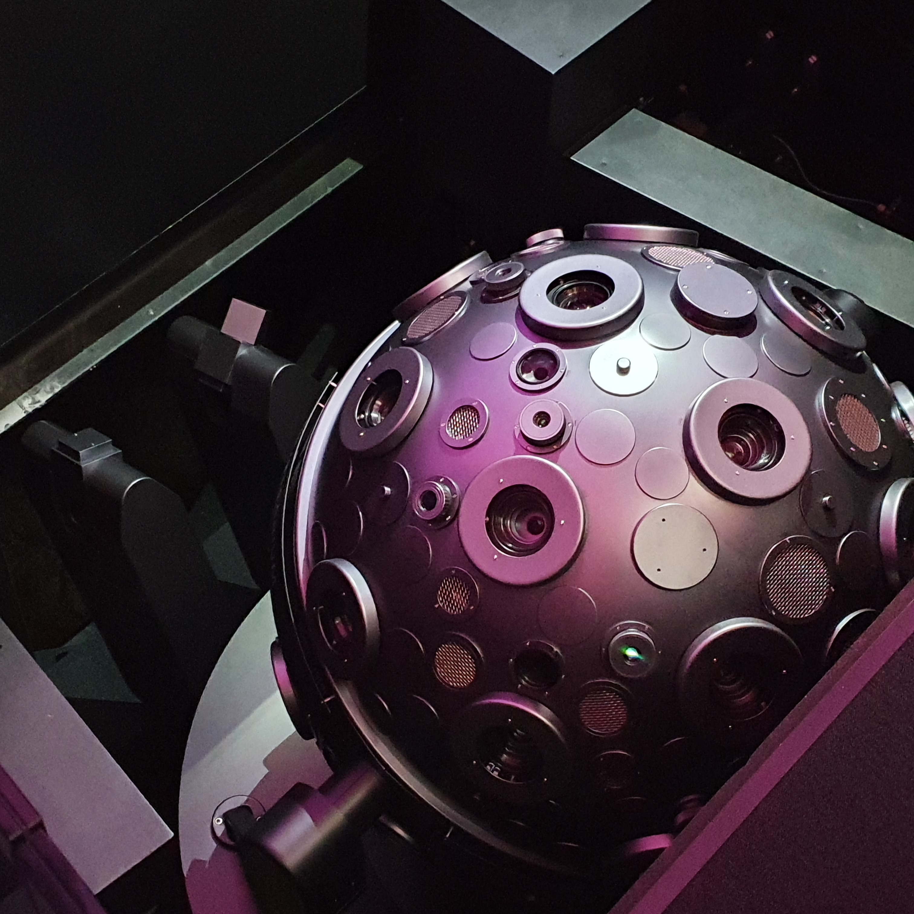
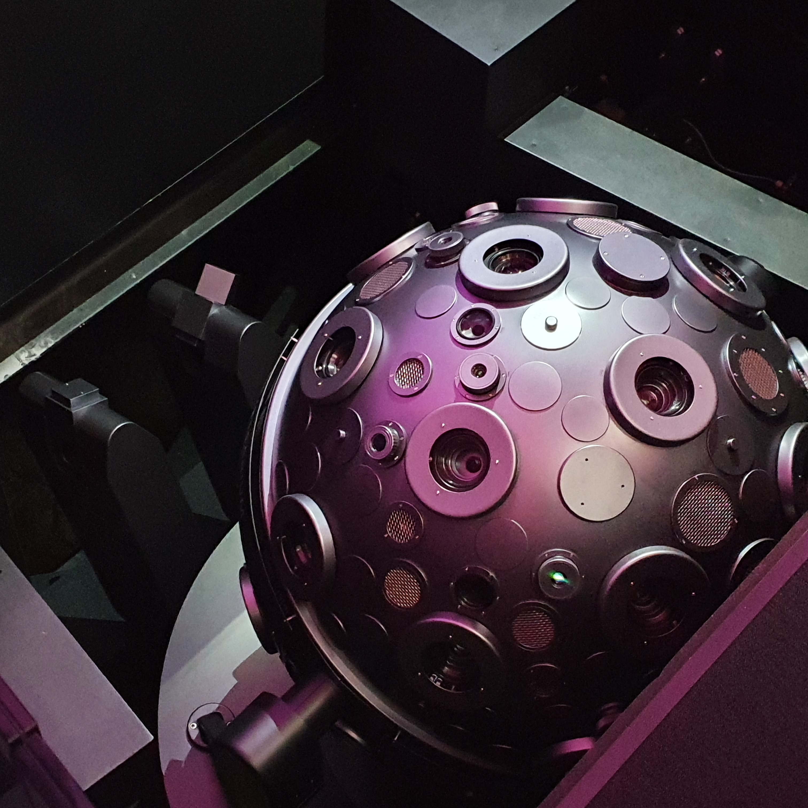

Planetarium Fritzlar
Wir entführen Sie ins Weltall
Die Sternfreunde Fritzlar sind in die Gießener Straße 77 in Fritzlar umgezogen. Besuchen Sie uns in unserem hochmodernen, nagelneuen Planetarium.

Auf unserer sechs Meter großen Kuppel präsentieren wir Ihnen ab sofort mithilfe unserer 360-Grad-Fulldome-Technik den Weltraum, wie Sie ihn noch nicht erlebt haben.
Reisen Sie mit uns zum Mond und zu fremden Planeten, wandeln Sie durch die Milchstraße und gehen Sie mit uns den großen Fragen nach: Gibt es unbekanntes Leben im Universum?
Technische Ausstattung
Das Planetarium Fritzlar verfügt über neueste Technik und ein computergesteuertes Projektionssystem, das Sterne in erstaunlicher Schärfe zeigen und kosmische Weiten ganz nah heranholen kann.
Wir bieten 30 Plätze unter unserer sechs Meter großen Kuppel.
 

Programm
Expedition in die Milchstraße
Häufig ist das leuchtend helle Band der Milchstraße sogar mit dem bloßen Auge zu erkennen: Was wir da sehen, ist unsere eigene Galaxie. In diesem Vortrag zoomen wir so nah heran, dass sich Milliarden Einzelsterne zeigen, aus der die Milchstraße besteht.
15 Uhr
Schwarze Löcher
Was einem Schwarzen Loch zu nahe kommt, verschwindet für immer. Sogar Licht! In diesem Vortrag wagen wir uns dennoch ganz nah an die größten Geheimnisse des Weltalls heran.
15 Uhr
Auf der Suche nach Leben
Sind wir allein? Generationen von Wissenschaftlern stellten sich bereits diese Frage. In diesem Vortrag besuchen wir nicht nur den Mars, auf dem bereits Wasser entdeckt wurde, sondern auch Meteoriten, die als Transportmittel für biochemische Moleküle dienen können.
Vereinbarung

Ihr Besuch
Adresse
Planetarium Fritzlar
Gießener Straße 77
34560 Fritzlar
Fon: 05622 9118896660
E-Mail: info@planetarium-fritzlar.de
Öffnungszeiten
Mittwoch – Freitag: 12 – 17 Uhr
Samstag – Sonntag: 12 – 20 Uhr
Eintritt
Erwachsene: 6 Euro
Ermäßigt: 4 Euro
Kinder bis 18 Jahre: 2 Euro